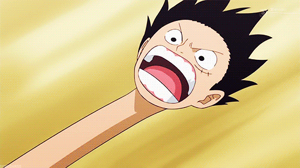
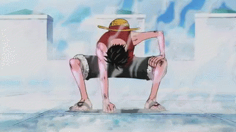
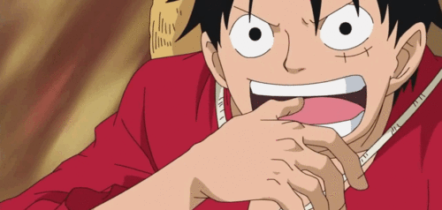
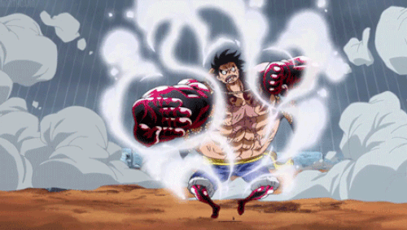

Luffy gained extraordinary stretching and elastic powers from eating the Gomu Gomu no Mi (lit. Rubber Rubber Fruit, Gum-Gum Fruit in the English dub), which is one of the rare and legendary Devil Fruits.

Luffy gained extraordinary stretching and elastic powers from eating the Gomu Gomu no Mi (lit. Rubber Rubber Fruit, Gum-Gum Fruit in the English dub), which is one of the rare and legendary Devil Fruits.
Gear 1 is his base mode. His base strength and speed mixed with the stretching ability.
Luffy uses his legs (Just his hand post-timeskip) as pumps to increase the blood flow in his body. This provides him more oxygen and nutrients. Enhancing Speed and Strength though affecting his endurance to the point of paralysis after prolonged use. Rob Lucci compares its affect to doping. Luffy can use this technique because of his Rubber Blood vessels which don't tear under extreme stress. Post Time-skip he gains much more control over this Gear, saving his Stamina. He can activate and deactivate it quickly. Used in combination with Haki he also can use much more powerful attacks.
Luffy corks his mouth with his thumb, bites into his thumb joint (making a small opening) and blows very hard into it, which inflates his arm. He is then able to transfer the air through his entire body, requiring the torso to act as an interface for his various limbs. Luffy blows so much air into his body that when they are all focused on a single limb, they become the size equivalent to (or greater than) that of a giant's, if anything resembling Oars' size. Used with his already-strong physiology, this apparently gives his arm more mass and a larger area to attack with far greater strength, but he sacrifices mobility for this strength, as his limbs are now so large that Luffy has trouble moving. In Gear third he essentially inflates his Bone to Giants (or larger) size. The increase in mass and momentum give him tremendous Raw power (Destroying Marine Battleships, Oars Backbone etc.) Major difference for this is that Luffy loses his elasticity.
Luffy puffs up his Muscular Structure giving him more power, while keeping up his flexibility. This seems to be a cross between Gear 2 and 3 while utilizing his Haki.
Haki is a mysterious power that is found in every living being in the world. It is not that different from the typical senses. However, most people do not notice it or fail to awaken it. Broadly speaking, there are two types of Haki available to everyone, given the proper training; however, there is a third type that only a certain group of "chosen ones" are said to possess.